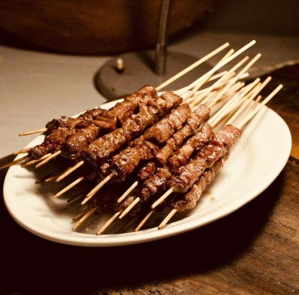
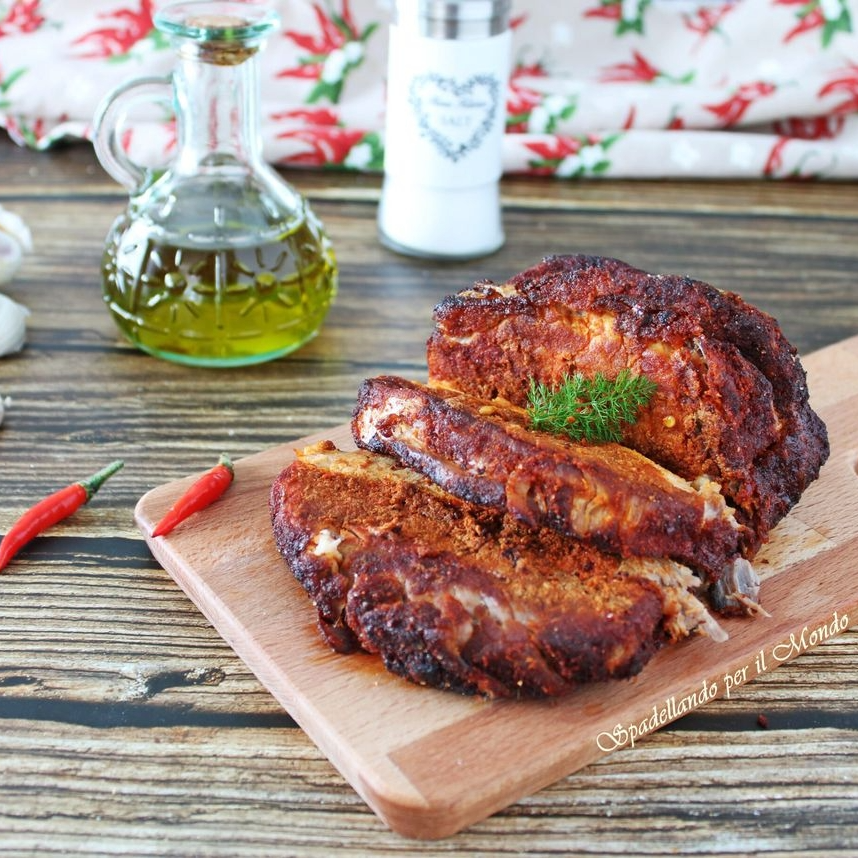

Ricette Salate
In questa sezione troverai tutte le ricette salate tipiche delle regioni italiane, dai piatti di pasta alle pizze, ideali per pranzi e cene gustose.

Abruzzo -Gli Arrosticini-
Ingredienti:
-Pecora la polpa 800 g
-Olio extravergine d'oliva 30 g
-Rosmarino 1 rametto
-Sale fino 4 g
Preparazione:
Per preparare gli arrosticini, cominciate prendendo la carne. Aiutandovi con un coltello dalla lama tagliente, eliminate le parti più grasse della carne. Quindi, tagliate la carne in striscioline e quindi a cubetti spessi 1cm.
Ottenuti i cubetti di carne infilzateli negli spiedini. Ripetete il procedimento per tutti gli arrosticini. Ora fate scaldare bene una griglia in ghisa e oleatela leggermente in modo da girare facilmente gli arrosticini in cottura.
Quindi adagiate gli arrosticini sulla griglia rovente.
La cottura dovrebbe richiedere all’incirca 1 minuto per lato. Cuocete gli arrosticini in entrambi i lati fino a quando non noterete una leggera crosticina. Salate e guarnite il piatto con i vostri arrosticini con del rosmarino e pomodorini. I vostri arrosticini sono ora pronti da gustare!

Molise -La Pampanella-
Ingredienti:
-Filetto di maiale 800g
-Sale fino q.b.
-Aglio fresco 1 spicchio
-Olio extravergine d'oliva 3 cucchiai
-Aceto di vino bianco 100ml
-Paprika dolce q.b.
-Peperoncino fresco tritato q.b.
Preparazione:
Prendete il filetto di maiale e tagliatelo a fette ma senza arrivare al fondo (le fette devono essere ancora attaccate alla carne), salate bene la carne e massaggiatela in modo che in ogni parte venga salata.
Con uno spremiaglio schiacciate l’aglio e mettetelo in una ciotolina, aggiungete la paprika (circa 20 grammi) e un cucchiaino di peperoncino fresco tritato molto finemente, l’aceto di vino bianco e girate bene gli ingredienti.
Mettete il composto sulla carne e fatelo aderire bene anche nella parte interna delle fette.
In una teglia (noi ne abbiamo utilizzata una in vetro) mettete l’olio extravergine d’oliva e con un pennellino spennellatelo su tutta la superficie della teglia, adagiate la carne e fate marinare per 30 minuti.
Trascorso il tempo coprite la teglia con un foglio di alluminio e fate cuocere per 40 minuti a 170°, poi togliete il foglio di alluminio, con un cucchiaio mettete il liquido che si è formato nella teglia sulla carne e fate cuocere per 20 minuti a 180°.
Trascorso il tempo di cottura, togliete il foglio di alluminio dalla carne, mettetelo su un piatto da servizio e filtrate il liquido di cottura, se fosse troppo liquido potete farlo restingere sul gas dopo averlo messo in un pentolino.
Servite la carne accompagnata dalla salsa.